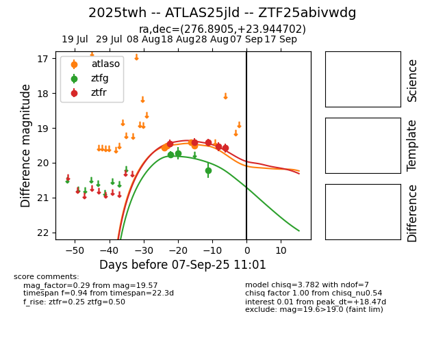

Target 2025twh at 2025-08-28 03:40, see:
FINK: fink-portal.org/ZTF25abivwdg
Lasair: lasair-ztf.lsst.ac.uk/objects/ZTF25abivwdg
ALeRCE: alerce.online/object/ZTF25abivwdg
TNS: wis-tns.org/object/2025twh
YSE: ziggy.ucolick.org/yse/transient_detail/2025twh
alt names
ZTF25abivwdg (ztf,fink)
2025twh (tns,yse)
ATLAS25jld (atlas)
coordinates:
equatorial (ra, dec) = (276.8905,+23.94470)
galactic (l, b) = (52.2065,+15.64331)
photometry
last atlaso=19.60, ztfg=20.22, ztfr=19.42
4 atlaso, 3 ztfg, 3 ztfr detections
